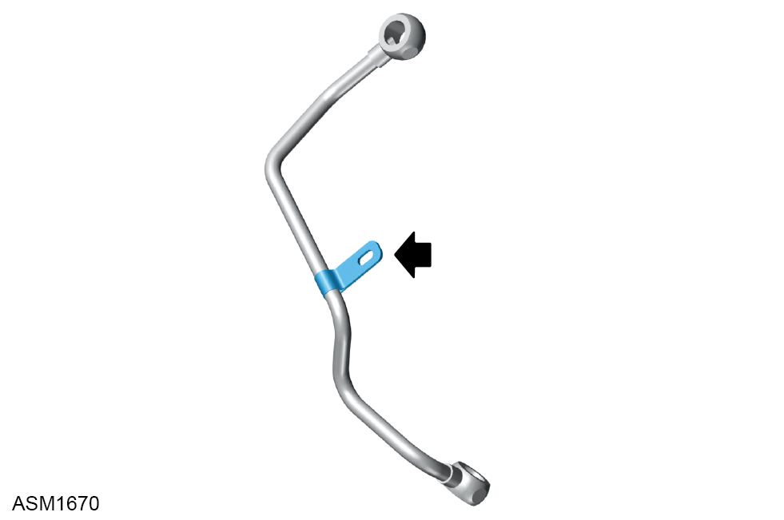

Oil Control Valve Pipe - Right Side - V6
Print
Operation Code: 40.05.28-02
Removal
- Remove auxiliary drive belt. Refer to procedure.
- Remove bolts (x2) securing power steering pump to engine. Torque 43 Nm.
- Lower power steering pump to access valve pipe lower banjo bolt.
NOTE: Place a cloth on top of power steering pump to soak up any oil.
- Remove lower banjo bolt securing oil control valve pipe to engine.
- Allow oil to drain.
NOTE: Drain oil into a suitable container and dispose of appropriately.
- Remove M6x30 bolt securing oil control valve pipe to engine.
- Remove banjo bolt securing top of oil control valve pipe to engine.
- Remove oil control valve pipe and discard O rings.
- Remove gauze filter from oil control valve pipe.
Do not carry out further disassembly if component is removed for access only.

- Remove P clip from oil control valve pipe.
NOTE: Record orientation of P clip
Installation
- Installation is the reverse of removal procedure except for the following:
- Install P clip to oil control valve pipe.
- Clean gauze filter and install to upper banjo bolt.
- Install upper banjo bolt with new O rings to oil control valve hand tight only.
- Install lower banjo bolt with new O rings to oil control valve hand tight only.
- Ensure correct orientation of oil control valve pipe and tighten banjo bolts (x2). Torque 45 Nm.
- Install M6x30 bolt securing oil control valve pipe to engine. Torque 10 Nm.
- Check oil level and top up if necessary.